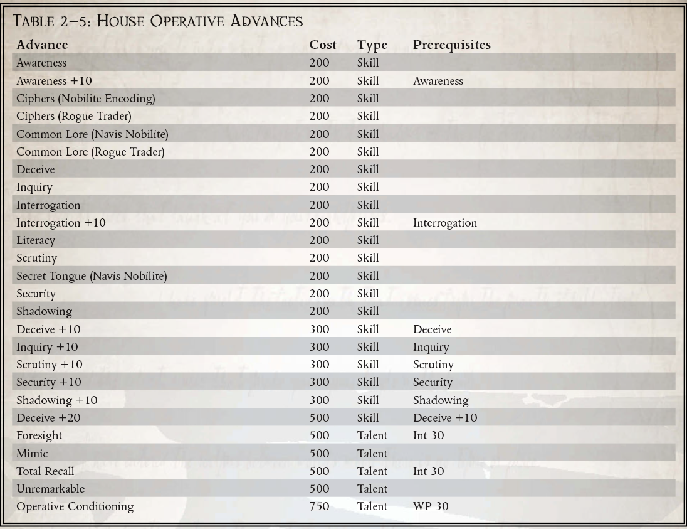

“对我的船长大人来说，我是一个值得信赖的顾问。对于我主的船员来说，我是他的喉舌。为了我们在 Expanse 中的利益，我是他值得信赖的代理人。然而，对他的王朝来说，我是他的隐形守护者，他沉默的编年史，如果他们愿意，我是他的刽子手。”
——Argyrus Asidenus 加里达斯家族的沉默者
对于拥有与 Rogue Trader 一样强大的力量的男人和女人来说，秘密可能是比宏炮电池或病毒炸弹更强大的武器。适当泄露的信心可能会破坏帝国总督的权威，摧毁战斗舰队，或者甚至推翻整个系统。这些秘密是用来对付盗贼商人还是为了他自己，是大多数持证王朝的领主非常关心的问题。尽管有这种担忧，即使在他们自己的船上，也有一些人通过玩秘密、破坏、操纵和勒索的伟大游戏来获得成功。许多团体必然会聘请这些问题的专家。作为强大的政治力量，Rogue Trader 王朝、海军贵族、帝国贵族和许多其他人都在玩这个游戏以及其他任何游戏，也许除了可怕的宗教裁判所。
Rogue Traders 将其特工的技能用于许多目的。他们对监视和密码的了解有助于保持对 Rogue Trader 船上的成群结队的密切关注，确保在其强大的船体中没有叛变或异端溃烂。他们对各种询问和审讯方法的熟悉使他们成为从那些会阻挠 Rogue Trader 设计的人那里收集信息的理想代理人。诚然，他们的训练是精明的上尉所采用的任何反间谍活动的重要基础。特工定期接受可靠技术培训，以忍受折磨者和审讯者的服侍，并且可以指望他们保守自己的秘密，就像他们收集主人的敌人的秘密一样可靠。
具有显着权力和威严的流氓商人可能会利用一名特工作为间谍大师，在他们的船只、舰队或跨系统的财产中指挥许多次要特工的行动和服务。这些阴谋大师扮演着巨大的蜘蛛，坐在由线人、卧底和叛徒组成的错综复杂的网络中心，所有这些都为了一个目的而行动。这种间谍大师是危险的人，总是在他们微妙的游戏中提前计划十步。
对盗贼商人的秘密最大的威胁往往是在他自己的船上，甚至可能是他最亲密的顾问。数千年的内讧和阴谋使得许多航海家家族既偏执又狂妄到了极点。尽管整个人类帝国都依赖于他们的生存天赋，但他们对同胞的不信任是传奇的，他们嫉妒地保守着自己的秘密。因此，他们在日常交易中严重依赖间谍活动和诡计。正是出于这个原因，海军贵族家族经常训练他们雇用的一些特工密切关注他们的雇主，找出他们的弱点和罪恶，作为未来合同的可能筹码。
事实上，即使是盗贼商人自己的王朝家族也可能会在其贸易令状的世袭持有人的随从中聘请代理人，以确保他按照王朝的意愿行事，而不是根据自己的心血来潮。这些特工通常是最阴险的，因为他们伪装成一个值得信赖的同志或同谋，同时他们一直在蠕动着获得 Rogue Trader 的信任，以获取权证持有人最接近的那些东西。这些双重间谍甚至可能被要求在船员中煽动叛乱，以破坏一个违背王朝意愿行事的流氓商人，或者在必要时切断任性继承人本人的喉咙。像这样的特工走在剃刀的边缘，平衡着他们对队长大人的职责和他们对家族的职责，时刻警惕他们不让自己的手倾斜。
就连神圣的国教和机械教都知道使用这些方法。帝国教派的许多代理人通常都是狂热的正统拥护者，他们利用他们的阴谋和诡计在船员甚至是他们的盗贼商人指挥下的军官中抽出那些煽动异端的人。另一方面，火星祭司的许多特工更关心保护他们的秘密，而不是发现他人的阴谋（除非他们可能会获得被遗忘的技术系统的知识）。他们的知识是他们最珍贵的财产，因此他们的努力经常用于在他们的船长船长的船上围绕他们邪教的奥秘构建庞大的密码和错误信息迷宫。
即便是在数以亿计的帝国民众中，拥有阴险狡猾或诡计多端的性格成为有用的宫廷特工的男人和女人也相对较少。尽管如此，还是不乏渴望在 Rogue Trader 船上担任间谍大师这样的职位的人。这些被迷惑的人的名字被记录在少数文本中，也没有被记入编年史。那些拥有处理秘密和欺骗所需技能的人很少渴望过这样的生活，他们要么被强大的间谍大师选中从事这样的职业，要么在他们出生之前就注定要担任这个职位。由于即使是机械神教的令人敬畏的技术也无法永远保护一个人免于死亡，可靠的特工和间谍大师会寻找那些拥有艺术和狡猾的人来填补他们的位置，并亲自训练这些新兵在他们自己死后取代他们的位置。最经常从出生开始培养他们的特工的是流氓商人和海军贵族的王朝。这些人可能一生都在为他们的房子服务，让他们的童年接受审讯、诡计、密码和监视方法的教育。
所需职业：除了 Rogue Trader、Kroot 和 Ork 之外的任何职业。
替代等级：4 或更高 (13,000 xp)
其他要求：探索者必须有 30 的友谊，以及 40 的智力或意志力。为了进入这个职业，探索者必须已经直接为政治机构工作，要么是帝国贵族，要么是流氓商人王朝，导航屋或类似实体。

手术调节（天赋）
Explorer 获得了 Chem-geld 和 Orthoproxy 天赋的好处（心理调节取代了这些通常需要的手术）。除了抵制诱惑和审讯外，众议院特工还经常接受训练，以利用俘虏的询问来对付他。探索者可以利用审讯者的问题和技巧来获取关于审讯者本人及其工作对象的性质、目标和动机的详细信息。如果探险者受到审讯，并在对抗的审讯与意志力测试中获胜，他可以立即进行挑战 (+0) 审查测试。在一次成功和每多一次成功的情况下，他都可以了解关于他的俘虏的一个细节（他能学到的和不能学到的最终都取决于 GM，但它应该是有价值的东西）。